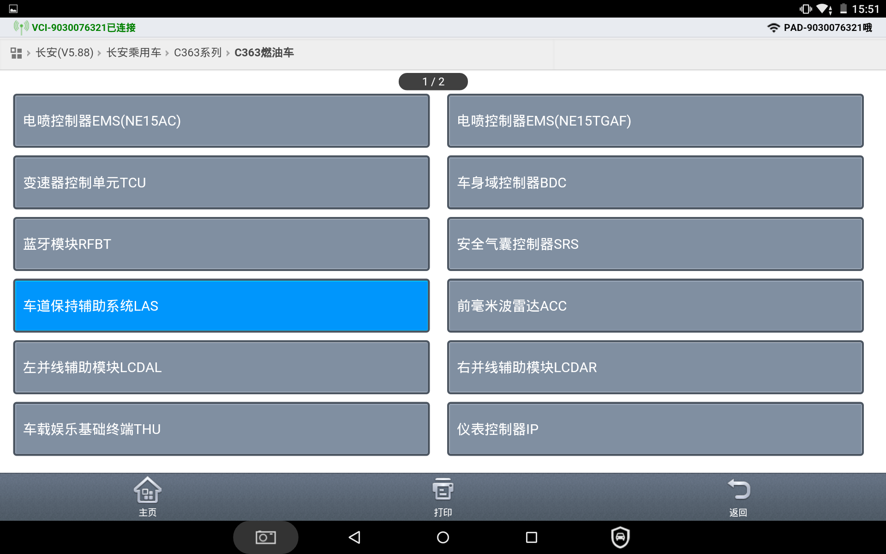
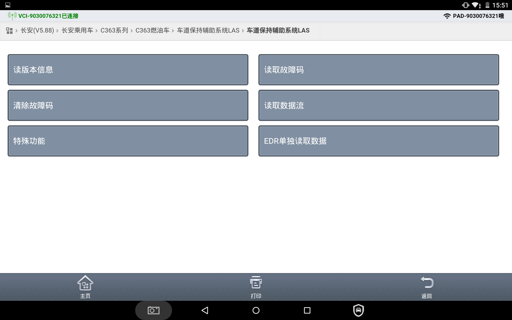
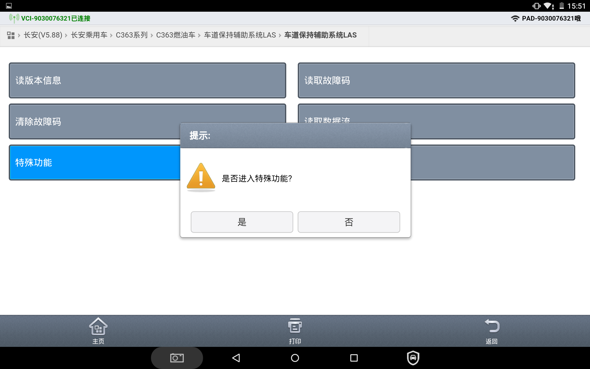
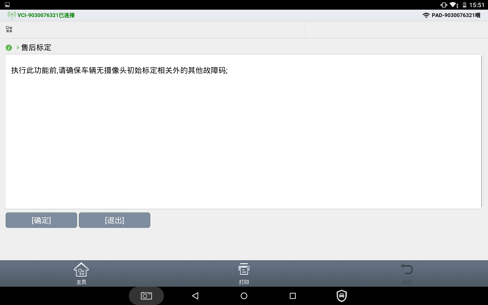
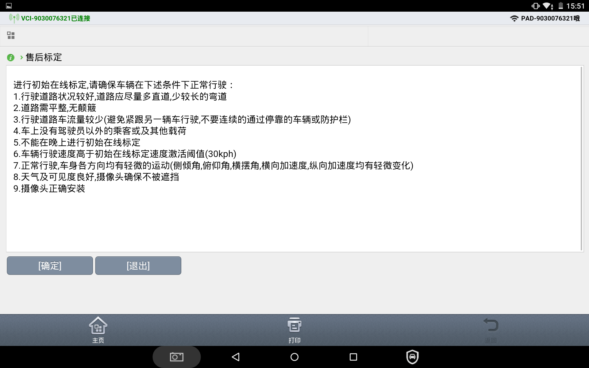
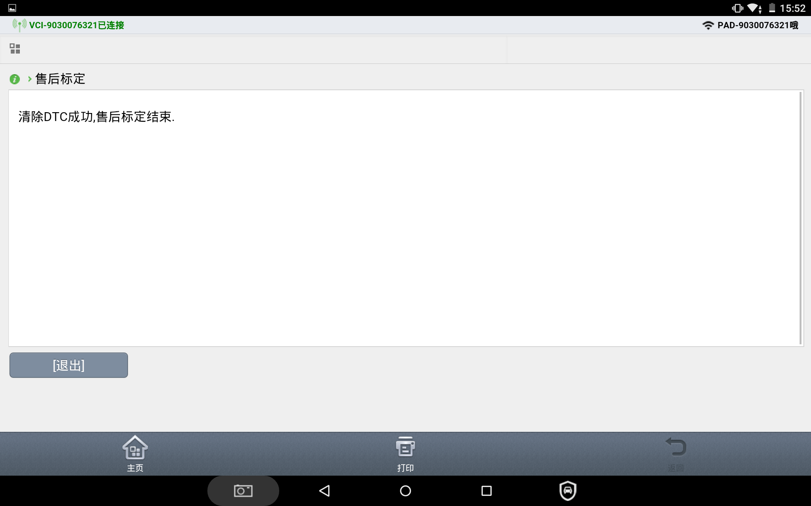

1、连接诊断仪、启动车辆。
确认车道偏离控制器总成安装到位。
2、驾驶车辆在公共道路上行驶。
要求道路两侧有清晰的车道线；车辆速度在30km/h~60 km/h。
3、开启车道偏离售后标定。
进入诊断仪 B216→ 前视摄像头总成（LAS)→ 特殊功能→ 售后标定→ 点击下一步启动
售后标定
操作过程中，车速在30km/h~60 km/h之间，否则无法开启售后标定。






4、标定
以大于30km/h的速度在车道中间行驶约3-5分钟。
路面必须有车道线、车速不满足时标定处于自动等待状态，不会退出标定，继续行驶使得车速满足要求。
5、完成标定
完成标定后，诊断仪提示标定成功。诊断仪清理故障码后再读取故障码，没有未校准故障码。
6、功能检查
完成标定后重启车辆，车速保持在65km/h以上，缓慢偏离车道，车轮压过车道线，发出报警。